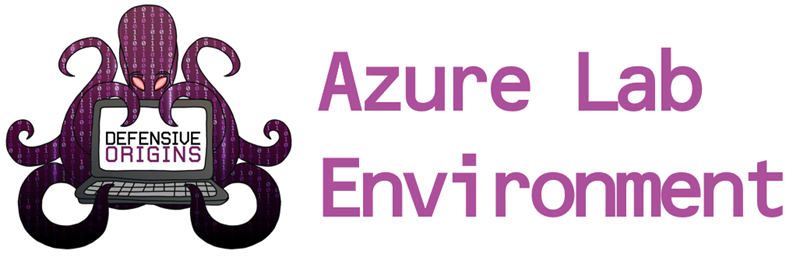
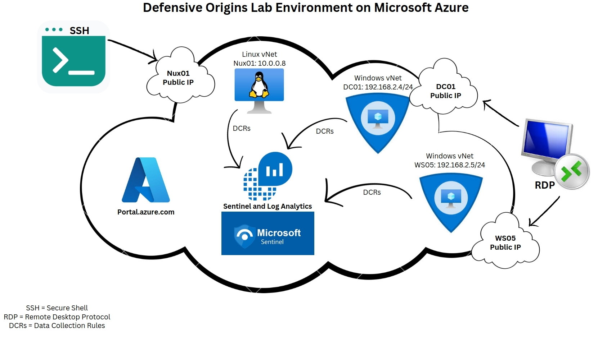

The Defensive Origins Lab (DO-LAB) Environment is used during the Defensive Origins training classes by Defensive Origins, AntiSyphon Training, and Black Hills Information Security.
Click the button below to start the deployment of the Defensive Origins Lab Environment within your Azure account.
While the deployment within Azure should be region agnostic, some deployed resources may not be available in all regions. The following locations have specifically been tested:
Are you attending a Defensive Origins training course that utilizes the Defensive Origins Azure Lab Environment? See the below links for additional information on the DOAZLab Pre-Requisites for Defensive Origins training courses.
Assumed Compromise - Methodology With Detections and Microsoft Sentinel
Attack Detect Defend:
Applied Purple Teaming:
|  |
|---|